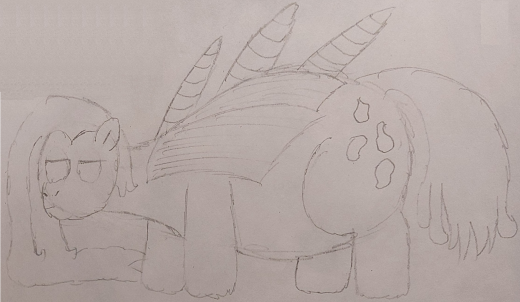

| Commonality | 6.3% (Gangrenous Archons) |
| Durability | 10/10 |
| Strength | Physical: 4/10 Psionic: 3/10 Magical: 11/10 |
| Specials | Magic storage and absorption Can conjure Weirs |
| Personality | Placid and meditative |
Thresholds are heavily gangrenized Totems. Greatly enlarged and converted into large scale magic storages, they act as arcane logistic specialists and can even purify gangrenous energy for use by regular puppets, spawning Weirs to aid in doling out and converting magic. A group of Thresholds is called an accretion.
Totems - Thresholds - Shleppers
Thresholds are massively oversized compared to Totems, standing at a colossal 10' 2" (310cm) with a significantly wide build to boot. This is large enough that Thresholds breach standard "superheavy" status, instead having to be spawned in four pieces (head, shoulders, barrel, rear) by their host Archon and pieced together by Demulcents. They are occasionally referred to as "micro-titans", and indeed, Thresholds seem to have double the psionic weight usage that normal superheavy puppets do. Thresholds are equipped with two pairs of large elytra on their back, though no wings have ever been identified. Parting their elytra, instead, is a linear series of three large horns that run along their spine. Despite their large size and heavy mutation, they only bare modest signs of gangrenization in their hair and blister sacs.
Putting it as simply as possible, Thresholds are colossal arcane batteries, capable of compacting and storing an immense amount of magic. They actually have very limited spellcasting potential, generally reserved for conjuring and maintaining Weirs, as well as sharing magic with other puppets. In this regard, Thresholds act more like energy terminals, managing incoming and outgoing energy levels and storing excess for times of drought.
While most puppets do not have the magical capacity to make great use of a Threshold's capacity, it is to be noted that a well-charged Threshold is capable of restoring a Seraph's completely consumed rings, making them the only non-Cambrian puppet to be capable of such a feat.
In addition to peacibly accepting arcane donations from Tricksters and Totems, Thresholds are also capable of absorbing even high-intensity magical attacks through their elytra, which allow them to downstep magical currents for storage. This is most prevalent in that Angiites will prefer to unload their excess body mass as magical beams into Threshold elytra. This process does cause wear and tear over time to the Threshold, but this accrued damage can be repaired by Demulcents. Angiites can also take advantage of the high energy currents from incoming attacks to conujure Weirs, though a Threshold will never spawn more than ten total.
Thresholds are very sluggish, lumbering creatures during peacetime. They often make a habit of resting near spell circles, or in areas where lots of Angiites are present so they can be useful as magical recipients. They can also be seen grazing, using their large stature to break down plant matter that smaller puppets would have issues with digesting.
Thresholds share epigenetic triggers with not just Totems, but also Perditioners, though of course, many genes involved in spell synthesis are either suppressed or entirely disabled. Where exactly the Thresholds get their ability to absorb magic from is unknown, as the material that makes up their elytra is unlike anything used in the puppet clade. Some theorize that it comes from gangrene's magical-suppressant nature.
Thresholds are such confusing creatures, even among all the others I've seen. Usually, spawning in pieces is reserved for Titans; their enormous bodies need the time and care. Yet, these Thresholds are only about twice the total mass of an Anchorage, and yet they take four spawns. I can only assume it helps give them the time to prepare all their energy storage.
That's not to say their storage isn't unwanted, of course; the Titans require an enormous amount of energy, and it is good to have something productive to put the Metastae's excess towards. Not that sharing food has ever been a particular issue, but I do sometimes wish I had puppets just for managing extra caloric storage...
Thresholds started as they finished, more or less: Psuedo-Titans that acted as massive magical batteries. I wanted to expand on the logistics involved in Hyacinth's overall gestalt; namely how energies are shared between puppets. While psionics ensure a steady level of caloric satiation across the entire puppet clan, magic is decidedly more complicated, and thus Thresholds (and Weirs) have stepped up to fulfill the role of magical converter, storage, and distributor.
